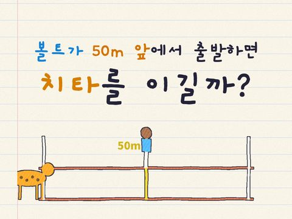
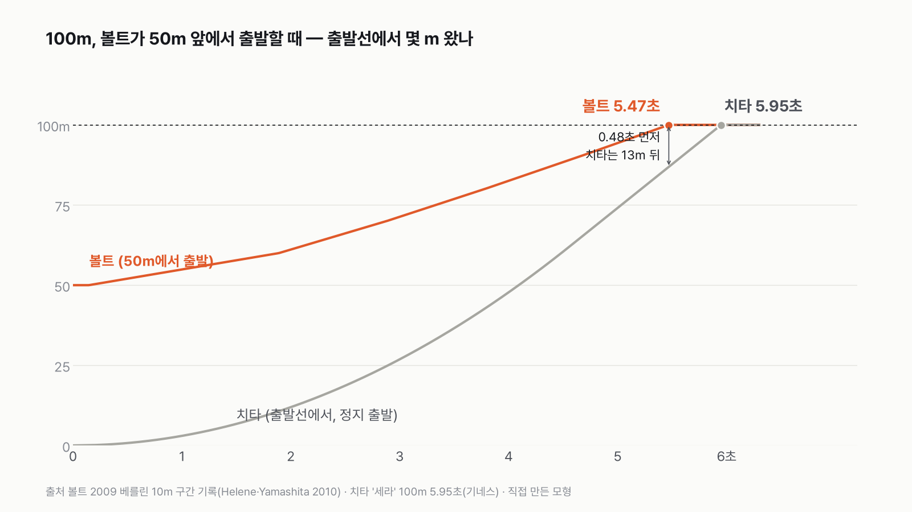
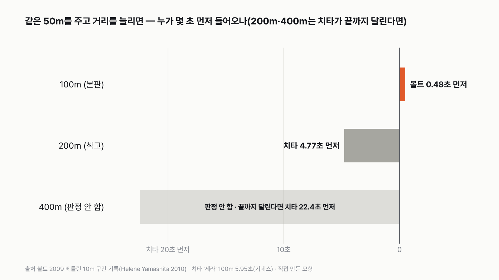
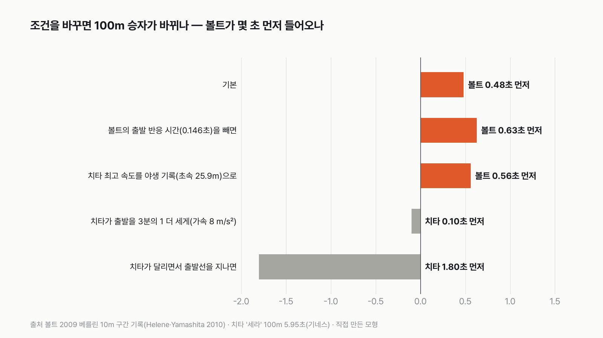
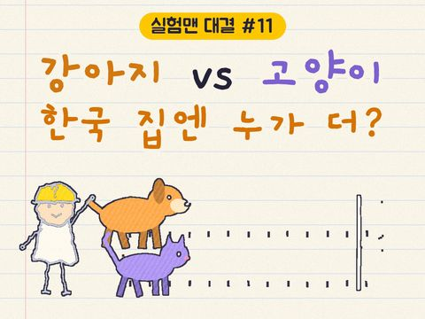

100m 달리기, 우사인 볼트가 50m 앞에서 출발하면 치타를 이길까
결과를 보기 전에 먼저 골라 주세요. 투표하면 독자 예상과 데이터 결과를 나란히 보여 드려요.

독자 투표
100m 달리기, 볼트가 50m 앞에서 출발하면?
이 대결의 규칙 자세히 (자료·판정 기준)
3줄 요약
- 100m 경주예요. 우사인 볼트가 50m 앞에서 출발하고, 치타는 출발선에서 출발해요. 누가 먼저 들어올까요?
- 볼트는 2009년 베를린 세계선수권(9초 58)의 10m 구간 기록, 치타는 공식 측정이 남은 100m 기록과 야생 치타 연구로 맞췄어요.
- 투표하면 결과가 바로 아래에 열려요. 몇 m 앞에서 출발해야 비기는지, 200m·400m라면 어떻게 되는지도 함께 보여 드려요.
조건과 규칙
- 볼트는 2009년 베를린 100m 결승의 10m 구간 기록을 그대로 써요. 50m 앞에서 출발한 볼트는 남은 50m만 달려요.
- 치타는 정지 상태에서 100m를 달린 동물원 치타의 기록과, 야생 치타 5마리를 목걸이 센서로 잰 연구(Wilson 2013)로 맞춰요.
- 두 쪽 다 같은 출발 신호에 출발해요. 먼저 결승선을 지나는 쪽이 이겨요.
결과 요약
- 최종 판정은 볼트 승이에요. 동물원 치타 '세라'가 실제로 잰 100m 5.95초 기준으로, 50m 앞에서 출발한 볼트가 0.48초 먼저 들어와요.
- 비기려면 볼트가 44m만 앞서면 돼요. 같은 50m를 주고 200m를 달리면 치타가 이겨요(치타가 그 거리를 다 달린다면). 400m는 치타가 그렇게 오래 달린 측정이 없어 판정하지 않았어요.
- 치타가 달리면서 출발선을 지나거나, 출발을 약 4분의 1 더 세게 하면 100m도 치타가 이겨요.
그래서? 짧은 거리에서는 출발이 승부를 가르고, 거리가 길어질수록 최고 속도가 이겨요.
독자 예상 vs 데이터 결과
100m 달리기, 볼트가 50m 앞에서 출발하면?
데이터로 보면 볼트가 이긴다. 100m는 볼트가 0.48초 먼저 들어와요. 같은 50m를 주고 200m는 치타예요(치타가 끝까지 달린다면).
3줄 요약
- 100m 경주예요. 우사인 볼트가 50m 앞에서 출발하고, 치타는 출발선에서 출발해요. 누가 먼저 들어올까요?
- 볼트는 2009년 베를린 세계선수권(9초 58)의 10m 구간 기록, 치타는 공식 측정이 남은 100m 기록과 야생 치타 연구로 맞췄어요.
- 투표하면 결과가 바로 아래에 열려요. 몇 m 앞에서 출발해야 비기는지, 200m·400m라면 어떻게 되는지도 함께 보여 드려요.


볼트는 50m 지점, 치타는 출발선에서 정지 상태로, 같은 신호에 출발해요. 볼트는 실제 세계 기록 경주의 구간 기록을, 치타는 정지 출발로 100m를 잰 공식 기록을 썼어요. 둘 다 '실제로 잰 100m'끼리 붙이려고 이렇게 정했어요.
| 본판 | 승자 | 승부를 가른 숫자 |
|---|---|---|
| 100m, 볼트 50m 앞 | 볼트 | 볼트가 0.48초 먼저 |
| 거리를 늘리면(참고) | 승자 | 승부를 가른 숫자 |
|---|---|---|
| 200m, 볼트 50m 앞 | 치타 | 치타가 4.77초 먼저 |
| 400m, 볼트 50m 앞 | 판정 안 함 | 야생 치타 한 번 질주는 평균 173m |
최종: 질문의 100m는 볼트 승. 같은 50m를 주고 200m는 치타 승(치타가 끝까지 달린다면)이에요.


본판 100m — 볼트 승
볼트는 남은 50m를 5.47초에 달려요. 베를린 결승에서 볼트가 50m를 지난 시간이 바로 5.47초였어요. 치타는 100m에 5.95초가 걸려요.
0.48초. 그때 치타는 결승선 13m 뒤였어요.
의외였던 건 치타의 출발이었어요. 치타의 최고 속도(초속 27.3m)는 볼트가 낸 최고 속도(초속 12.27m)의 2.2배예요. 그런데 세라의 기록에 맞추면 치타는 4.6초 가까이 가속해서 62m 지점에서야 최고 속도에 닿아요. 그사이 볼트는 50m 앞에서 같이 가속하고 있었어요. 볼트도 60~70m 지점에서야 최고 속도에 닿거든요. 짧은 거리에서는 최고 속도보다 출발이 더 중요하더라고요.
비기려면 볼트가 44m만 앞서면 돼요. 치타가 들어오는 5.95초에 볼트가 출발선에서 간 거리가 55.9m라서예요. 50m는 6m 넉넉한 앞출발이었어요.
거리를 늘리면 200m — 치타 승(치타가 끝까지 달린다면)
같은 50m를 주고 200m를 달리면 치타가 4.77초 먼저 들어와요. 치타가 최고 속도에 닿은 뒤로는 1초에 27m씩, 볼트는 10m 남짓씩 가니 차이가 금방 벌어져요. 비기려면 볼트가 100m, 경주의 절반을 앞서야 해요.
400m는 판정하지 않아요
치타는 그렇게 오래 달리지 않아요. 야생 치타 5마리의 질주 367번을 잰 연구(Wilson 2013)에서, 한 번 달린 거리는 평균 173m였고 가장 길게 달린 것도 개체마다 407~559m였어요. 최고 속도는 보통 1~2초만 냈어요. 치타가 400m를 최고 속도로 끝까지 달린다는 건 측정이 없는 가정이라, 400m 판정은 뺐어요.
계산만 해 보면, 치타가 최고 속도를 400m 내내 유지하면 22.4초 먼저 들어와요. 그 연구의 사냥 평균 최고 속도(초속 14.9m)로만 달려도 치타가 앞서요. 하지만 중간에 멈추면 볼트가 이겨요. 200m도 평균 질주 거리(173m)보다 길어서, 200m 판정 역시 '치타가 끝까지 달린다면'이라는 조건이 붙어요.
100m가 뒤집히는 조건
치타가 세라보다 약 8% 짧은 시간에, 곧 100m를 5.47초 안에 들어오면 본판이 뒤집혀요. 세라 기록에 맞춘 출발이 평균 6.0m/s²인데, 이걸 약 4분의 1 더 세게(7.6m/s² 넘게) 하면 그렇게 돼요. 가속을 8m/s²(약 3분의 1 더 세게)로 놓으면 치타가 0.10초 먼저 들어와요. 야생 치타는 한 걸음에 최대 초속 3m씩 빨라졌다는 측정이 있어서(Wilson 2013), 순간 가속은 그보다 셀 수 있어요. 그 가속을 100m 내내 평균으로 유지하는지는 아직 몰라요.


치타가 이미 달리면서 출발선을 지나면 100m를 3.67초에 들어와 치타가 1.80초 먼저예요. 반대로 볼트의 반응 시간을 빼면 볼트가 0.63초 먼저, 가속은 세라와 같게 두고 치타 최고 속도를 야생 기록(초속 25.9m)으로 바꿔도 볼트가 0.56초 먼저예요.
그렇다면 세라가 아닌 야생 치타가 출발선에 서면 몇 초가 나올까요? 그 기록이 나오면 이 판정을 다시 열어 볼 거예요.
이 숫자는 어디서 왔나요
출처
기준일 조건은 2026년 11월 6일, 계산하기 전에 정했어요. 계산도 같은 날 했어요.
Helene·Yamashita 2010,American Journal of Physics
- 볼트 100m 구간 기록doi:10.1119/1.3274162원본 보기
10m마다의 누적 시간, 반응 시간 0.146초, 보고된 최고 속도
세계육상연맹(World Athletics)
- 볼트 200m·400m 기록
200m 19초 19(2009 베를린), 400m 개인 최고 45초 28
기네스 세계기록, 내셔널지오그래픽(2012)
- 치타 100m 기록
신시내티 동물원 '세라' 정지 출발 100m 5.95초, 레이더 최고 시속 61마일
Wilson 외 2013,Nature
- 야생 치타 달리기 측정doi:10.1038/nature12295원본 보기
야생 치타 최고 속도, 한 걸음에 늘어나는 속도, 한 번 달리는 거리
어떻게 셌나요
- 볼트: 2009년 베를린 100m 결승의 10m 구간 누적 시간을 썼어요. 50m 앞에서 출발한 볼트는 출발 신호에 다시 가속해서 50m를 달려요. 그 경주의 0~50m 시간(5.47초)이 그대로 볼트의 기록이에요.
- 반응 시간: 볼트의 5.47초에는 출발 신호에 반응한 0.146초가 들어 있어요. 세라의 5.95초는 정지 출발 기록이지만, 출발 신호에 반응하는 시간이 들어 있는지는 알 수 없어서 반응 시간이 사실상 없다고 봤어요. 볼트에게 불리한 쪽이에요.
- 치타: 세라의 실측 100m 5.95초가 본판의 기준이에요. 거리별 위치를 그리려고, 일정하게 가속해서 레이더로 잰 최고 속도(초속 27.3m)에 이른 뒤 그대로 달린다고 봤어요. 가속의 모양을 어떻게 잡든 100m를 5.95초에 맞추면 본판 판정은 같아요.
- 200m·400m(참고): 볼트는 처음 100m를 100m 기록대로, 나머지는 200m(19.19초)·400m(45.28초) 기록에 맞춰 일정한 속도로 달린다고 봤어요. 실제 200m·400m 앞부분은 100m보다 느리니 볼트에게 조금 유리한 가정이에요. 치타는 최고 속도로 끝까지 달린다고 봤어요.
한계 5가지
이 데이터로 말할 수 없는 것
- 치타 기록은 동물원 치타가 미끼를 쫓아 직선으로 달린 기록이에요. 야생 치타의 사냥과는 다르고, 공식 육상 기록처럼 출발을 재지는 않았어요.
- 거리별 위치를 그리려고 치타의 가속을 '일정한 가속도'로 단순하게 봤어요. 본판 판정은 세라의 실측 시간으로 정해지므로 가속 모양과 상관없어요.
- 200m·400m에서 볼트의 첫 100m를 100m 기록대로 둔 건 볼트에게 조금 유리한 가정이에요. 결과는 바뀌지 않았어요.
- 치타가 200m·400m를 최고 속도로 끝까지 달린다는 건 측정이 없는 가정이에요. 야생 치타의 한 번 질주는 평균 173m라 400m 판정은 뺐고, 200m 판정은 '치타가 끝까지 달린다면'이에요.
- 2차 자료에만 있는 숫자(세라의 2009년 기록 6.13초, 다른 치타의 6.19초, 치타 201m 7.0초, 볼트 200m 전·후반 9.92·9.27초)는 판정에 쓰지 않았어요.
다음 대결
대결 다 보기
강아지 vs 고양이
한국에서 키우는 개가 많을까 고양이가 많을까?
A개vsB고양이
투표하러 가기
대결동물투표했어요결과: 3명이면 충분고릴라 vs 남자들
수컷 고릴라 1마리를 몸집과 에너지 모두에서 넘으려면, 한국 남자 3명이면 충분할까?
A3명이면 충분vsB3명으론 부족
투표하러 가기
대결동물투표했어요호랑이 승사자 vs 호랑이
사자 vs 호랑이, 싸움 말고 능력으로 겨루면 누가 이길까?
A사자vsB호랑이
투표하러 가기
대결동물투표했어요사람 승개미 vs 사람
지구의 개미 전부 vs 사람 전부, 어느 쪽이 더 무거울까?
A개미 전부vsB사람 전부
투표하러 가기
대결하루 시간투표했어요결과: 개인 운동걷기 vs 운동
걷기·산책 vs 개인 운동, 하루에 한 사람이 더 많은 쪽은?
A걷기·산책vsB개인 운동
투표하러 가기
대결하루 시간투표했어요TV 승TV vs 영상
TV vs 영상, 하루에 본 사람이 더 많은 쪽은?
ATV(실시간 방송)vsB영상(다시보기·동영상)
투표하러 가기
대결설문투표했어요믿을 수 있다 승우리 사회, 믿을 수 있다 vs 없다
우리 사회, '믿을 수 있다' vs '믿을 수 없다' 더 많은 쪽은?
A믿을 수 있다vsB믿을 수 없다
투표하러 가기
대결하루 시간투표했어요반려동물 승반려동물 vs 식물
반려동물 돌보기 vs 식물 돌보기, 하루에 한 사람이 더 많은 쪽은?
A반려동물 돌보기vsB식물 돌보기
투표하러 가기
새 글 나오면 받아 보기
피드 리더 앱에 이 사이트 주소를 한 번 넣어 두면, 새 글이 올라올 때 앱에 떠요. 가입이나 메일 주소는 필요 없어요.
받는 법 보기
- 피드 리더 앱을 하나 골라요. 새 글을 모아 보여 주는 앱이에요. 예를 들면 Feedly나 Inoreader가 있어요. 둘 다 무료고 웹·휴대폰에서 써요.
- 앱에서 '구독 추가'(+)를 누르고 아래 주소를 붙여 넣어요.
- 끝이에요. 새 글이 올라오면 앱 목록에 떠요.
https://protofu.github.io/opendata-insight/feed.xmlFeedly를 쓴다면 여기를 눌러 바로 추가할 수도 있어요.